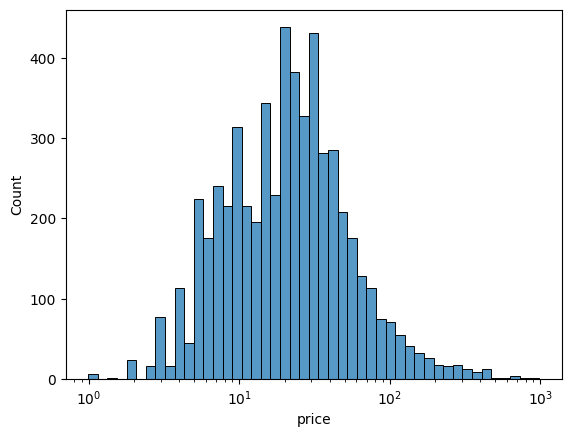
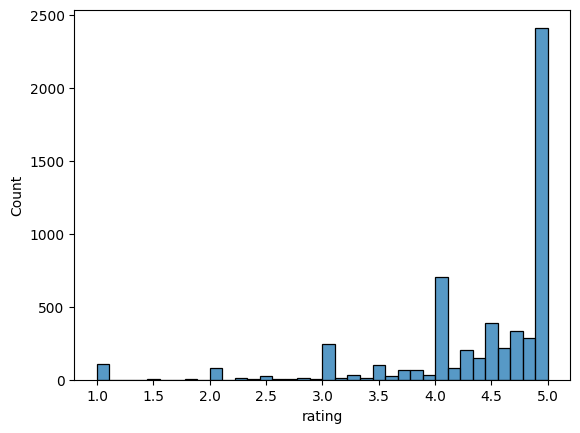
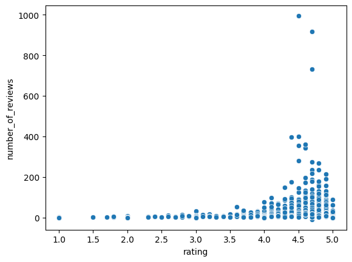

Price: the key to our decision making process?
While shopping for products one of our main concearns is Price. When scrolling on e-commerce website we’re trying to find the best deals: we compare prices of different products and from different platforms, we sort products based on it…and even when eventually we buy something, the price is still in our mind. We evaluate the product based on it, we wonder if the price-quality ratio is good or not, and finally decide if it was worth it, if we’re happy with our choices, through a logic that places price at the centre of our decision making process and our satisfaction
Raising prices: do you follow or switch sides?
In this post we are interested in knowing how prices influence our behavior while shopping for cosmetics. For providing a better context, let’s clarify that cosmetics usually have elastic demand. This means that if the price goes up, people tend to buy less, and if the price goes down, they buy more. This is because cosmetics are not necessities but rather optional purchases, and consumers are price-conscious. Moreover, cosmetics is a highly competitive market where consumers can choose among many substitutes and easily switch from one to another. Overall, we can say that price is a major factor while shopping for this category of products.
If price is so important for us, then how does it interrelate with product popularity and customer satisfaction?
For example, if a product is expensive would you expect it to be more or less popular? Are cheaper cosmetics more widespread or less, compared to the luxury ones? If the price of your favourite face cream goes up, to which degree would you be willing to keep on paying for it? And what about customer satisfaction…what role does the price play in defining consumers’ overall satisfaction with a product? An higher price improves the perception of the product? How do we shape our expectations while considering an expensive cosmetic? Are we more likely to rate positively a cheap or a luxury product?
Methodology
These are some of the questions that we will try to answer in this post. But first, let me tell you how this analysis was conducted.
Our test subject for finding answers to these questions is Douglas cosmetics, together with its customer base. Product data from 3 macro-categories such as Body (detergents and treatments), Face (detergents and treatments) and Hair (styling and treatments) were scraped during summer 2024, including price per product, number of reviews per product, rating (ranging from 1 to 5), product brand, and eventually the presence of a cruelty-free claim. To the latter I have dedicated an entire article, where I’ve shown how cruelty-free claims influence product popularity and consumer sentiment towards products. If you missed it, check it out here!.
Data collection was conducted in an automatic manner with web-scraping technique, and after some hard work of pre-processing and encoding, that you can read in the section “methodology”, I was left with a 5620 product details tidy and ready to work on.
With this in mind, here’s how we will proceed:
- We will start by analyzing Douglas dataset looking at summary statistics and understanding the essential features of our dataset, including prices, ratings and reviews count.
- We will explore the relationships between these variables to understand how they influence consumers’ satisfaction and the overall popularity of cosmetics.
By the end of this post, you’ll have an idea on how Douglas customers react to prices: do they prefer expensive or cheaper options? Do they feel more satisfied with a luxury product or the cheap ones?
Let’s get started!
Descriptive Statistics: a preliminary analysis
| x | mean | std | Min | 25% | 50% | 75% | Max |
|---|---|---|---|---|---|---|---|
| price | 34.14 | 50.95 | 1.99 | 10.99 | 22.60 | 41.99 | 770.99 |
| rating | 4.5 | 0.71 | 1.00 | 4.30 | 4.70 | 5.00 | 5.00 |
| reviews | 11.90 | 40.60 | 0.00 | 1.00 | 3.00 | 8.00 | 995.00 |
Prices:
While the least expensive product on the platform is 1.99 euros and the most expensive is 770 euros, the average price of products is around 34. With a budget up to 23 euros, you can choose among 50% of the entire catalogue, with 25% of the products being maximum priced 10.99 euros. This makes Douglas a great choice for those who want to buy cosmetics on a budget, offering a wide range of affordable options. If you’re going for more luxury products instead, or you’re looking for a present for someone who’s not “it’s the thought that counts”, with a budget over 42 euros you only have access to 25% of the products. Products that represent a good compromise between cheap and luxury, ranging from 23 to 42 euros, are being squeezed in the 25% of the catalogue between the 2nd and 3rd quartile. According to this data, luxury products are a smaller segment of Douglas inventory, where more space is given to low-cost products. Maybe a price distribution plot can make things clearer.

Follow me reading the plot from left to right: there’s a very small quantity of products priced 1 and 2 euros, and products priced 3, 3.5 and 4 euros get to around 200 items in total. Products count keeps on growing with price 5 to 9 euros but remains relatively low, slightly above 200 items. When we get to 10 euros we meet the first peek: notice that 10 as an exact price is at the end of its own spike, with products most probably price 9.99 taking over the spike range. More than 300 products are price 10 euros. The range between 10 and 20 euros is very dense of products, with another peak before the 20 euros mark. At 20 euros we have the highest peak of the distribution, called mode, which represents the most common price in the catalogue, with a quantity of more than 400 products with this price. Between 20 and 30 euros we stay up with products count, close to 400 and never below 300. At 30 euros we have the second highest peak again with more than 400 items. After 30 euros, products count starts decreasing, getting back to 100 items with a 100 euro price.
Now you can definetly see why I said that Douglas is a better choice for buying on a budget, since there’s way more options with a price below 10 than with a price above 30. Products are mostly priced 10, 15, 20 and 30 euros. Think about it now, aren’t these exactly the prices that the majority of people are willing to pay for a hair, face or body product?
Ratings:
Average rating for products on Douglas is 4.5/5, with only 25% of ratings being below 4.3 and at least half of them being above 4.7. According to this results, we can easily say that Douglas’ customers are satisfied with their products and tend to leave positive reviews.

From the ratings plot you can see that products are mostly positively rated, with 5/5 being the most common rating. 2500 is almost half of our sample size! This means that almost 50% of products are rated 5 stars.
Reviews Count
Average number of reviews under Douglas’ products is 11/12 reviews, but the standard deviation suggests that the values vary widely across the dataset. In fact, from the quartiles we can see that 50% of products have at most 3 reviews, and only 25% of them have more than 8 reviews. At the same time, the max value witnesses a product with 995 reviews.

This scatterplot shows the relationship between Rating as independent variable and Number of Reviews as dependent variable. While there is no relationship between the two variables, we can still make some comments.
There’s no observations (products) with a high number of reviews and an extremely low rating (from 1 to 2) and, while it gets denser around 3 and 3.5, the amount of observations with an higher number of reviews starts growing significantly only when we overcome the rating of 4. In particular, there’s quite a lot of products with 4.5 as rating and higher number of reviews: at the top right we can see the observation with the highest amount of reviews close to 1000, it’s the max value (995) we have in the descriptive statistics: now we know it’s a product with 4.5 rating! We observe a similar situation until we get to the perfect rating of 5. The plot shows that products with a 5 star rating have a number of reviews that doesn’t even get to 200.
Now think about our previous finding: yes, it is true that almost 50% of our products are rated 5 stars (look at the ratings plot) but these evidence takes a different turn when we find out that that number is based on a low amount of reviews.
While it’s still correct to say that products on Douglas are mostly highly rated, it’s also important to note that 5/5 products rely on the opinion of few customers.
How do customers react to prices?
To assess how Douglas customers react to prices, I decided to focus on 2 main points:
- The first question is RQ1: Does the price of a product affect its popularity? Given popularity (the number of reviews) as dependent variable, I used prices, brands and presence of a cruelty-free claim to understand how these variables impact on the amount of reviews for products (which reflects popularity). These dynamics will be explained by the following OLS model
\[𝑃𝑜𝑝𝑢𝑙𝑎𝑟𝑖𝑡𝑦 = 𝛼 + 𝛽1𝐶𝑙𝑎𝑖𝑚 + 𝛽2𝑃𝑟𝑖𝑐𝑒 + 𝛽3𝐵𝑟𝑎𝑛𝑑\]
- Second question is RQ2: Does the price of a product affects consumers’ sentiment towards it? Given sentiment as ratings (from 1 to 5), I used prices, brands and presence of a cruelty-free claim to understand how these variables impact on the rating that consumers give to products (which reflects sentiment). The above mentioned relationship will be explained by the following WLS model
\[𝐿(𝛼, 𝛽) = ∑𝑤𝑖 (𝑆𝑒𝑛𝑡𝑖𝑚𝑒𝑛𝑡 − 𝛼 − 𝛽1𝐶𝑙𝑎𝑖𝑚 − 𝛽2𝑃𝑟𝑖𝑐𝑒 − 𝛽3 𝐵𝑟𝑎𝑛𝑑)^{2}\]
The results of the models are presented in the following figures:
| X | Coeff. | Stand.Error |
|---|---|---|
| const. | -6.318* | 4.814 |
| cruelty-free claim | 6.358* | 3.411 |
| price | 5.735*** | 1.556 |
| X | Coeff. | Stand.Error |
|---|---|---|
| const. | 4.263*** | 0.060 |
| cruelty-free claim | -0.131** | 0.058 |
| price | 0.071*** | 0.018 |
***p<0.01, **p<0.05, *p<0.1
Results
As we can see, the models are able to explain popularity and sentiment of products based on the independent variables above mentioned. While we have already discussed the implications for the presence of cruelty-free claims on both popularity and sentiment here, let’s focus now on price and how relates to popularity and sentiment.
- To answer our RQ1 about the Price and Popularity relationship, we look at the coefficient 𝛽2𝑃𝑟𝑖𝑐𝑒 in the Popularity model. It’s positive and highly significant, meaning that there is a positive relationship between the two variables: in other words this means that as the price increases, products popularity increases too and it’s not due to any random change. Since 𝛽2Price is log-transformed (as in the price plot), but Popularity is not, we do β2/100 and read the result as follows: 1% increase in Price is associated with 0.05735 increase in Popularity. With few calculations we can make a realistic example of how the popularity of a product increases with a 30% increase in price:
\[Popularity= 𝛽2𝑃𝑟𝑖𝑐𝑒 x log(1.30)\]
\[Popularity= 5.735 x 0.2624 ≈ 1.50\]
This means that when price increases by 30%, products have around 1.5 additional reviews. Let’s make it even more concrete: average price for a product on Douglas.it is 34 euros and counts 11 reviews. An hyphotetical product that costs 30% more (so around 44 euros) will have ≈ 13 reviews, and that’s how it gets “more popular”. This goes on for all products and prices, a 40% price increase leads to approximately 1.93 additional reviews, a 50% price increase leads to approximately 2.32 additional reviews…
In conclusion, we say that Yes, the price of a product affects its popularity and that the more expensive a product is, the more reviews it gets.
- To answer our RQ2 about the Price and Sentiment relationship, we look at the coefficient 𝛽2𝑃𝑟𝑖𝑐𝑒 in the Sentiment model. It’s positive and highly significant, meaning that there is a positive relationship between the two variables which doesn’t happen randomly and as the price increases, rating increases too. The coefficient, however, is small. Because 𝛽2𝑃𝑟𝑖𝑐𝑒 is log-transformed, according to the same logic explained above, we can say that 1% increase in Price is associated with 0.00071-unit increase in Sentiment. To make it more practical let’s calculate the change in sentiment for a 100% increase in price:
\[Sentiment= 𝛽2𝑃𝑟𝑖𝑐𝑒 x log(2.00)\]
\[Sentiment= 0.071 x 0.6931 ≈ 0.0492\]
This means that when the price is doubled, the sentiment of a product increases by approximately 0.0492 units. This is a very small change, so small that if a product on Douglas.it costs 34 euros and it’s rated 4.5 stars, an hyphotetical product that costs twice the price (68 euros) will be rated 4.5 + 0.0492 = 4.5492 stars. Basically, nothing changes!
In conclusion, we say that Yes, the price of a product affects its sentiment but the effect of price over rating is so small that it doesn’t affect the overall rating of the product.
Conclusion and Final toughts
In this article we got to know Douglas a little bit better: its prices are overall reasonable, there’s a lot of choice of low-priced products, and the reviews on the platform are mostly positive. Moreover, with this analysis we found out that price is extremely important for defining both Popularity and Consumers Sentiment.
Customers purchase intention
We acknowledged that more expensive products have more reviews on Douglas, so people buy them and rate them more, and this makes them more popular. In other words, we could say that customer purchase intentions are higher as the product gets more expensive. Or maybe, consumers are more likely to leave a review if the product is expensive…this is one more interpretation.
Customer behavior between perception and expectations
We realized that consumers satisfaction is also affected by price, and tends to increase as the price goes up but doesn’t lead to a visible increase in ratings. This may support the idea that consumers are not easily fooled by expensive products. The relationship between price and ratings is small, but it’s there and it’s strong. Therefore, we can talk about perceptions and expectations.
Our results may indicate that consumers tend to have higher perception as the product gets more expensive, rather than higher expectations. Because price and rating grow together, it’s a sign that consumers have a better perception of the product as the price increases.
If consumers had higher expectations as the price goes up, there would have been a negative relationship between price and ratings. As if to say, if consumers buy expensive products and then rate them lower, it’s a response to their high-but-failed expectations. This is, in my opinion, the most interesting result so far.
But, if the effect of price on ratings is so small, then what is it that pushes consumers to leave such great reviews? Maybe…BRANDS? We’ll find out soon